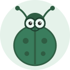

📚 依年級瀏覽
🧭 依主題瀏覽
🎭 認識我們的角色
🐻 黑熊老師
解釋概念、破解迷思
🦊 小狐同學
好奇愛問問題

🪲 甲蟲博士
補充科學冷知識
💧 水滴小隊長
帶實驗、顧變因
👾 迷思怪獸
說出常見迷思
❓ 今日科學問題
今天，一起想想看：
載入中…
想不出來也沒關係！翻翻下面的推薦閱讀，答案就藏在故事裡。
⭐ 推薦閱讀
載入中…
👩🏫 教師使用說明
- 依年級找符合班級程度的文章；依主題分類做跨年級課程設計。
- 每篇文章都有 14 個固定區塊：繪本故事、角色對話、三層概念、圖解、小實驗、迷思破解、小測驗、教師補充與內容查核。
- 「給老師的教學補充」可摺疊展開，含教學目標、引導問題、差異化建議、評量與 Rubric。
- 「小實驗」皆為安全、低成本、可在教室或家中完成的活動，並清楚標示操縱／應變／控制三種變因。
- 標示「⚠️ 需要查證」的內容，請老師確認後再授課。
🔗 課程銜接說明
本百科以國小三到六年級的自然科學課程為主題庫，不照課本單元順序，改用百科主題方式重新整併，並為每篇標示可延伸到國中的概念：
- 三年級·自然觀察入門：觀察、分類、描述、生活經驗、簡單操作。
- 四年級·生活現象解謎：找出自然現象背後的原因。
- 五年級·科學偵探與變因探究：實驗設計、變因控制、證據解釋。
- 六年級·系統思考與國中銜接：模型、系統、能量、交互作用與永續，直接銜接國中理化、生物、地球科學。
課程架構參考：115 學年度國小國中自然課程（康軒／翰林／南一）。